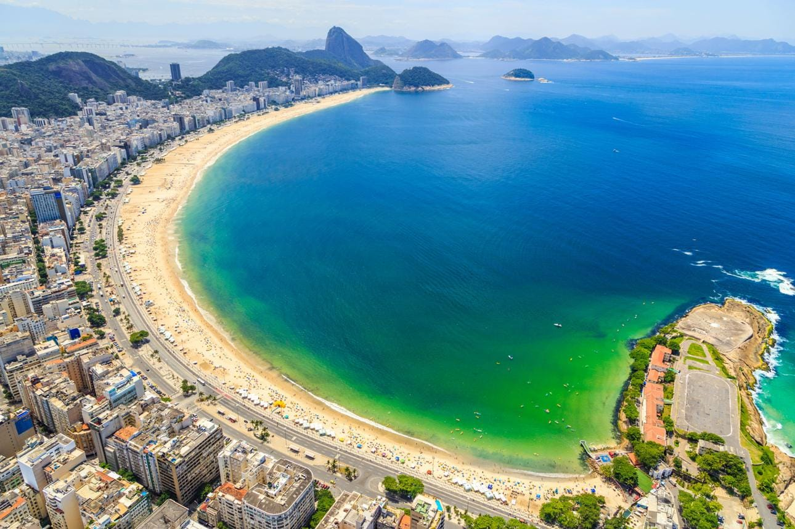

Río de Janeiro
Río de Janeiro es una de las ciudades más conocidas de Brasil. Se destaca por sus hermosas playas, sus paisajes naturales y su ambiente alegre. Es un destino ideal para disfrutar del mar, conocer su cultura y visitar lugares turísticos como el Cristo Redentor y el Pan de Azúcar. También es famoso por su Carnaval, uno de los eventos más importantes del mundo.

El Cristo Redentor (o Cristo do Corcovado) es una estatua de estilo Art Déco ubicada en la cima del Cerro Corcovado, en el Parque Nacional de Tijuca de Río de Janeiro, Brasil. Situado a 710 metros sobre el nivel del mar, el monumento mide 30,1 metros de altura (sin contar el pedestal de 8 metros) y tiene una envergadura de brazos de 28 metros.

La playa de Copacabana es una de las más famosas de Río de Janeiro, conocida por su arena dorada y su ambiente animado.
El Pan de Azúcar es una montaña que domina la ciudad de Río de Janeiro, conocida por su forma distinctive y sus vistas panorámicas.